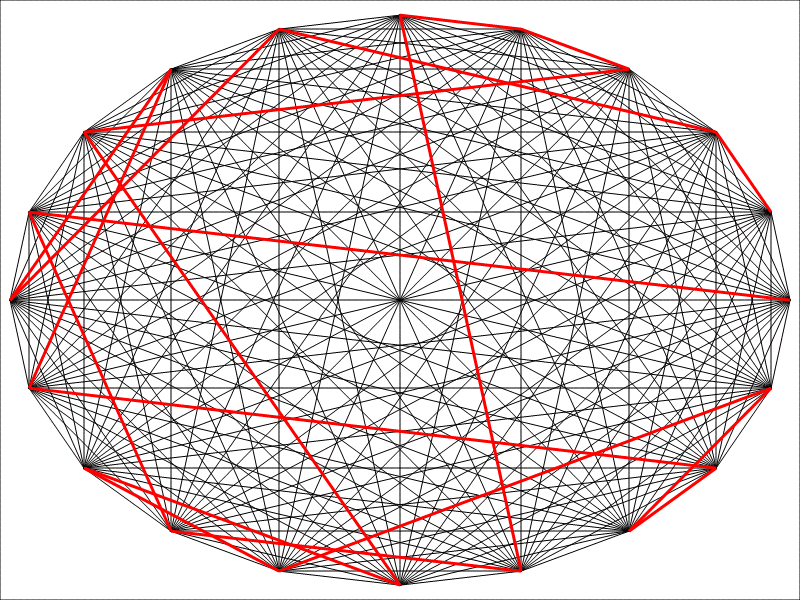
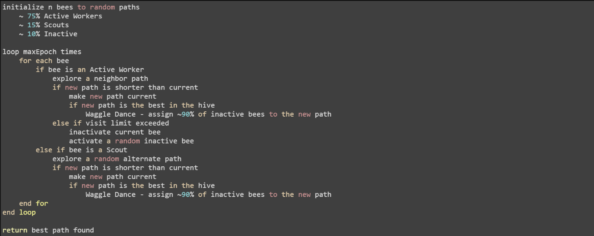
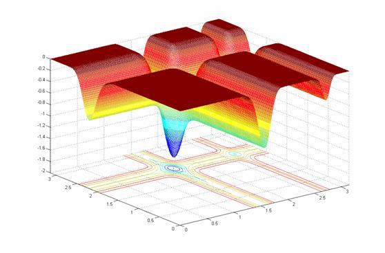
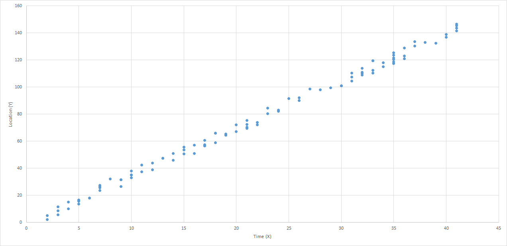
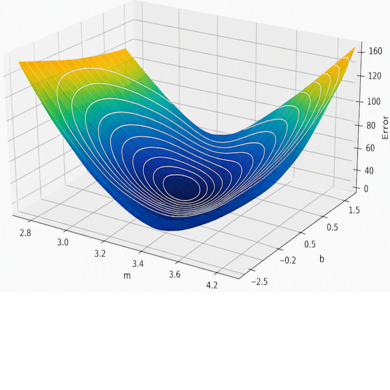

Beyond Procedural LogicSolving Problems Outside the QueryBarry S. StahlSolution Architect & Developer@bsstahl@cognitiveinheritance.comhttps://CognitiveInheritance.com |

|
Favorite Physicists & Mathematicians
Favorite Physicists
Other notables: Stephen Hawking, Edwin Hubble, Leonard Susskind, Christiaan Huygens |
Favorite Mathematicians
Other notables: Blaise Pascal, Daphne Koller, Grady Booch, Evelyn Berezin, Pascal Van Hentenryck |
Fediverse Supporter
|

|
Some OSS Projects I Run
- Liquid Victor : Media tracking and aggregation [used to assemble this presentation]
- Prehensile Pony-Tail : A static site generator built in c#
- TestHelperExtensions : A set of extension methods helpful when building unit tests
- Conference Scheduler : A conference schedule optimizer
- IntentBot : A microservices framework for creating conversational bots on top of Bot Framework
- LiquidNun : Library of abstractions and implementations for loosely-coupled applications
- Toastmasters Agenda : A c# library and website for generating agenda's for Toastmasters meetings
- ProtoBuf Data Mapper : A c# library for mapping and transforming ProtoBuf messages
http://GiveCamp.org

Achievement Unlocked

Bio-Inspired Algorithms
|

|
Best Path Algorithms
Ant Colony Optimization

Pheromones
|

|
Ant Colony Optimization

Ant Colony Optimization
|
Bee Colony Optimization

Types of Bees
|

|
Bee Colony Optimization

Bee Colony Optimization
|

|
Reducing Costs
Firefly Optimization
initialize n fireflies to random positions
loop maxEpochs times
for each firefly i
for each firefly j
if intensity(i) < intensity(j)
compute attractiveness
move firefly(i) toward firefly(j)
update firefly(i) intensity
end for
end for
sort fireflies
end loop
return best position found
Firefly Optimization
- Neighborhood Search
- Search the area toward best known solution
- Closer and Brighter: More Attractive
- Similar to gravity
- Tweaks
- Number of fireflies
- Range of possible values
- How fast fireflies move
- Features
- Works better for linear problems
- Optimality not guaranteed
- Can suffer from sparseness problems

Amoeba Optimization

Amoeba Optimization
initialize the amoeba with n (size) locations
loop maxEpochs times
calculate new possible solutions
contracted - midway between centroid and worst
reflected - contracted point reflected across centroid
expanded - beyond reflected point by a constant factor
if any solution is better than the current
replace worst value with best value from new solution
else
shrink (multiple contract) all lesser nodes toward the best
increment epoch count
end loop
return best position found
Amoeba Optimization
- Neighborhood Search
- Start with random locations
- Explore neighbors based on amoeba movement
- Surround the solution, then contract to it
- Tweaks
- Size of the amoeba
- > # of search dimensions
- Number of executions
- Handle local minima
- Size of the amoeba
- Features
- Optimality no guaranteed
- Can suffer from sparseness problems
What Can We Do With This Stuff?
Linear Data

Linear Regression Model
Predict the unknown values in a linear equation
|

|
Error Function
Weight (m) usually has the most impact on error |
 |
Voter Model


ML Demo
Using Amoeba Optimzation to Train an ML Model
More Bio-Inspired
|
Summary
|